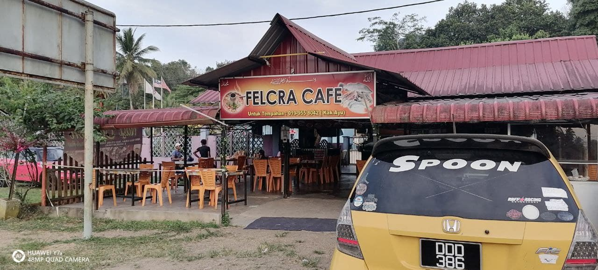

Che Daa Nasi Kerabu Golok Kambing Bakar

They sell nasi kerabu with double dish, chicken and beef for only RM4. Chee Daa special
menu is Nasi Kerabu Golok Kambing Bakar and you can get it at on RM7.90. Other than that, they also sell
everyones favourite nasi ayam gulai.
The operating hour for this stall is from 8.00am to 12.00pm
Address: Laluan Persekutuan 8, Kampung Pek, 18500 Machang, Kelantan
Nasi Ulam Nenda
Nasi Ulam Nenda offer various of local dishes. it is include 'ulam-ulaman', grilled fish, 'gulai ayam' and more.
The operating hour for this stall is from 10.00am to 08.00 pm
Address: Alamat : RnR, Bukit Belah, 18500 Machang, Kelantan
D' Zaa Station


D' Zaa Station has operating since 2010. This stall is very popular with people around Machang. They popular also with serving a very delicious coconut water.
Then, after rebranding their stall into D' Zaa Station, they focus on selling not only coconut water but local food. As you know, Machang people
and Kelantanese to be exact, they love to have rice for their breakfast, so, D' Zaa station become one of the stall that meet Machang people breakfast
satisfaction.
The operating hour of D' Zaa Station is from 6 am to 12 am. It is open everyday from Monday to Sunday.
Address: Lebuhraya Kota Bharu - Gua Musang, Kampung Setor Lima, 18500 Machang, Kelantan
Felcra Cafe

Felcra Cafe is located near Felcra office Machang. The strategic location allows them to attract Felcra worker to dine in
and have lunch at their place. They serve variety of local food. One of people favourite which is local people call 'Nasi Berlauk'.
'Nasi Berlauk' is a rice serve with yellow fish savoury.They also sell Kelantan local dish which is "Nasi Kerabu".
The operating hour for Felcra Cafe is from 8am to 10pm
Address: Laluan Persekutuan 8, 18500 Machang, Kelantan
Su Nab Nasi Ulam
Su Nab Nasi Ulam serve different kind of 'ulam-ulaman for local people. People of all ages flocked to the stall.
The operating hour for Su Nab Nasi Ula is from 11am until 12am
Address: Kampung Pangkal Petai, 18500 Machang Kelantan.